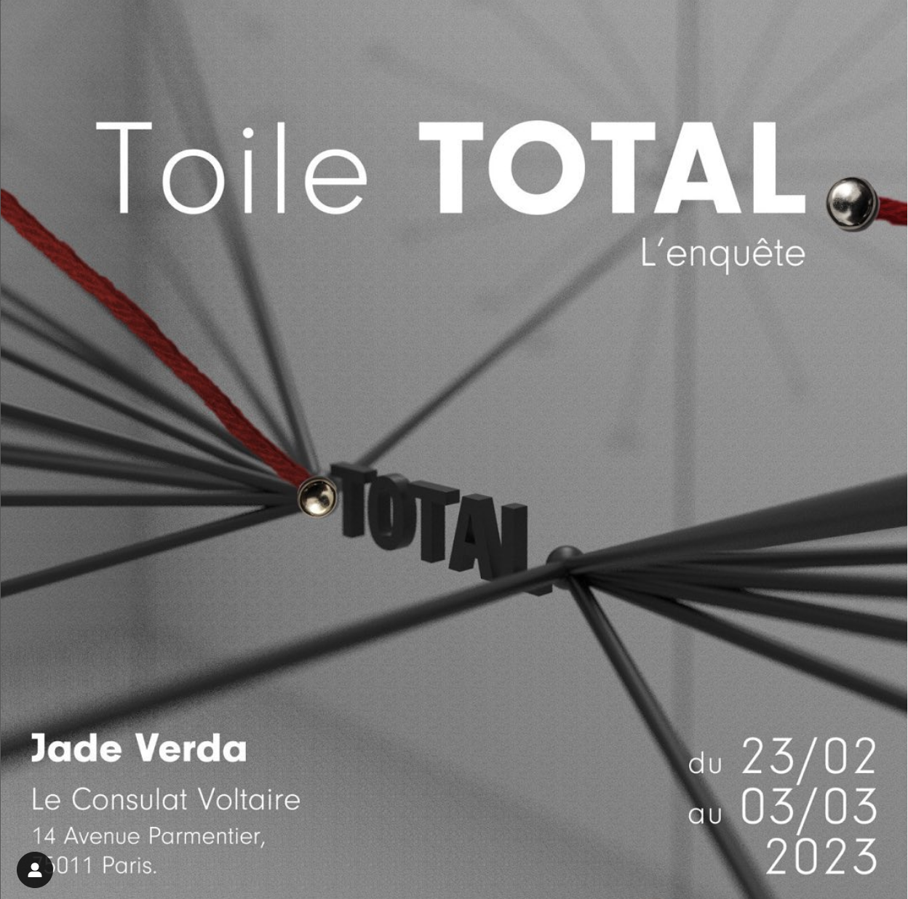
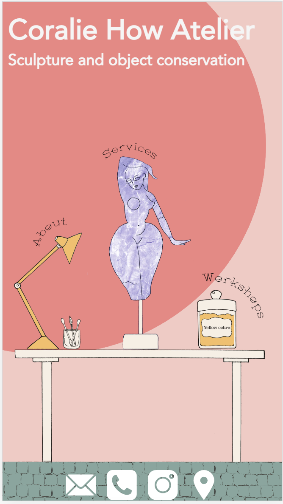
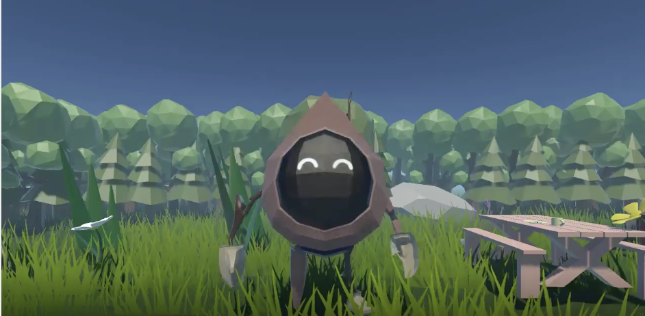
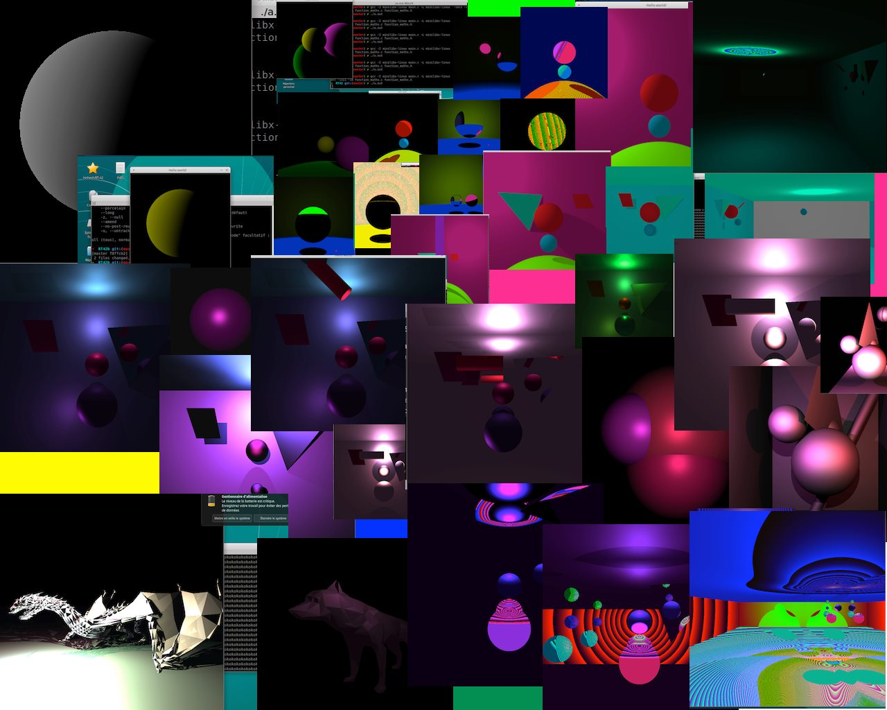
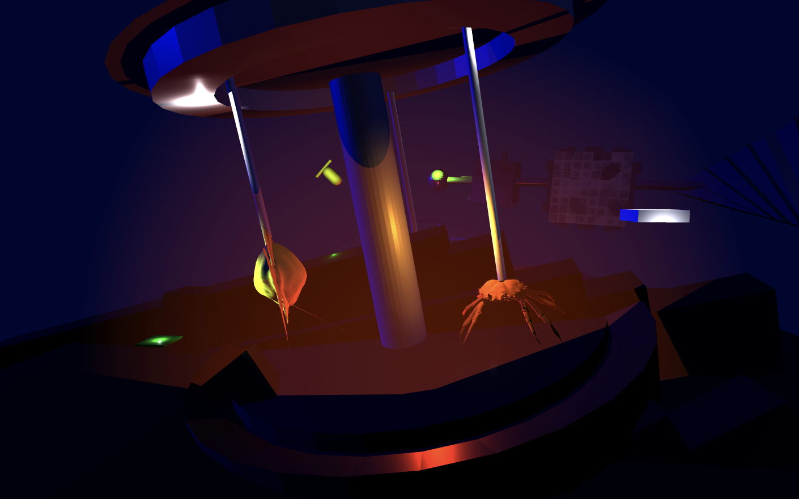
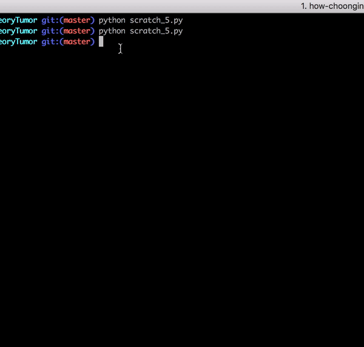

Projets et autres ...
2023_ Virtualisation de l'installation "La Toile Total" de Jade Verda exposée au Consulat Voltaire
En collaboration avec Jade Verda et Etienne Lemiere, le projet était de retranscrire sous une forme de toile intéractive les financements de Total.
Lien : L'enquête Total

Technologies utilisées : JavaScript, ThreeJs, HTML, CSS
2022_ Site interactif pour Atelier de conservation à Bruxelle
Réalisation d'un site vitrine responsive sous forme de mini tableau intéractif.
Lien : Coralie How Atelier

Technologies utilisées : React, NextJS
2022_ Hackathon Boulle x 42 x Gaiété Lyrique : UDI
Avec mes collaborateurs, nous nous sommes interrogés sur le rapport entre le corps, la technologie et comment ces deux entités formattent notre gestuelle. On a eu l'idée de repenser complètement l'expérience utilisateur d'un ordinateur partant du Desktop à la souris.
On a créer en quelques mots un desktop immersif influencée par le célébre Desktop Colline de Windows controlable via des capteurs de mouvements

Lien video: UDI
Technologies utilisées : Unity, Arduino
2022_ Game Jam Gobelins x 42 x VivaTech : Ecobot
Avec mes collaborateurs, on a réalisé un jeu à portée plus narrative basé sur du click and point traitant de l'écologie. Ecobot est un petit robot qui arrive sur la Terre pour nettoyer la planète et sauver les animaux à sa petite échelle.

Lien :Ecobot
Technologies utilisées : Unity
2021_ Implémentation d'un logiciel de Raytracing
MiniRT est un projet à 42 qui consiste à reproduire un logiciel de Raytracing.
Le Raytracing est technologie de rendu graphique qui calcule de manière réaliste les rayons lumineux visibles et invisibles. Il permet un éclairage réaliste dans les jeux vidéo et les animations 3D et est de plus en plus utilisé comme une fonction matérielle sous la forme de ray tracing en temps réel.

Lien :MiniRT
Technologies utilisées : C
2021_ Mon premier mini jeu
Sealand était mon premier mini jeux inspirée de la dystopie, l'écologie et le film AI de Spielberg.
L'idée était d'apprendre plus sur Unity et blender

Lien :Sealand
Technologies utilisées : Unity, Blender
2020_ Travail de laboratoire sur la propagation des cellules tumorales
Sous la tutelle du Professeur Badr Kaoui, je devais créer un programme simulant la progression de cellules tumorales en se basant sur la Théorie des Jeux

Lien :Game Theory Tumor
Technologies utilisées : Python